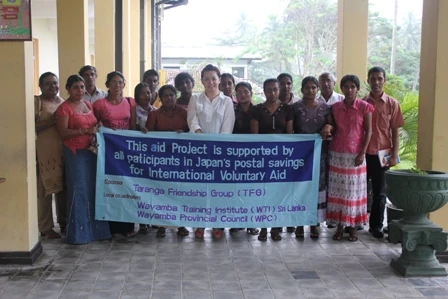
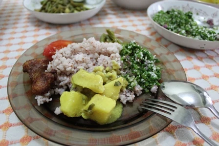
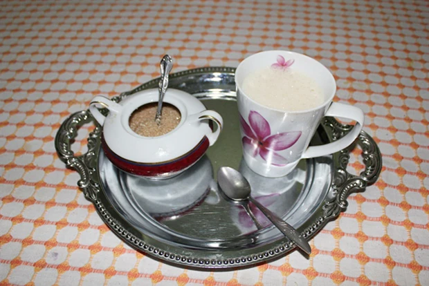

「今回でスリランカに行くのは３回目でしたので特にスリランカの国に対する不安は全くありませんでした。
またホームスティ先も日本人を受け入れに慣れている所と紹介されていたのでその点も安心できました。
前回スリランカに２回行った際は、ツアーで行ったため、ほとんどが観光で現地の方と触れ合うこともなく終ってしまいました。
３回目は違う形で行きたいなと以前から考えており、また英語も勉強できる、スリランカ料理も学べる、ボランティア活動もでき、観光地も希望すれば行けるとのことですごく魅力的なプログラムでしたので迷うことなく決めました。
レッスンは私のレベルに合わせて進めていただき、簡単な文法を学んだあとは会話を中心に日本の文化とスリランカの文化の違いなどを話しました。
途中で単語が分からなくなって考えてる時間もちゃんと根気強く合わせていただき助かりました。
勉強途中のTeaTimeも楽しみでした。
宿題は日記のみでした。私のレベルにはちょうどあっていたと思います。
短い期間ながらもマーネルさんが一生懸命教えてくださり感謝しております。
スリランカでのホームスティは、仏教の教えが行き届いていて、両親を敬うことや目上の人に対する気遣いなど電気をこまめに消したり、物を大切にしたりする気持ちなど、今の日本人に欠けている大切なことを間近で感じることができたことは大変貴重でした。
子供達にお菓子を上げると帰りにしゃがんでお辞儀するしぐさ（何ていうか忘れましたが）を私にもきちんとしてしてくれすごく感動しました。
日本ではここまで感謝の気持ちを表す子供はいないですよね。（大人もそうですが）
ホストファミリーとの生活は、普段は皆さんシンハラ語を話しているので、シンハラ語が少しでも言葉が分かればもっと楽しいだろうなと感じました。
生活に関してはほど良く干渉もなく、自由に生活できたのでとてものんびり過せました。
日本での生活に疲れていたせいか（笑）スリランカでは良く寝てしまいました。
もっと積極的に皆に話しかければよかったなぁと今は反省しています。

低開発村視察は現在は電気もほとんど通っているということで想像していたよりは色々とちゃんとしているなぁという感想を持ちました。
また女性はとてもお洒落に気を使っているなと感じました。
イキイキとした目をしているのがとても印象的でした。
４年前にスリランカに来た時と明らかに車の量が増えていて、街中はクラクション音がうるさくてうるさくて（笑）おかしくなるほど鳴らしすぎなので日本人にはちょっと慣れないかも。
でもホームスティ先は緑多くとても静かで過しやすかったです。
また、今回異常気象ということで滞在中はほとんど雨で涼しかったのでスリランカらしさを体感できませんでした。
日本の初夏みたいだったので私としては汗もかかず過しやすかったです。
雨だったので若干制限されることもあったのでマーネルさんと『きっと神様がまた来なさいっていってるんですよね』と話していました。
これまでの旅行は観光がメインで、移動も電車だったりツアーバスだった為、地元の人と話す機会も少なかったので、今回はホームステイが出来て本当に良かったです。
地元の移動手段を使ったこともとてもおもしろかったです。
紅茶の仕事をしている関係上、この先もずっとスリランカとは関わって行きますので今後はさらに行く回数が増えると思います。
自分一人で行けるようになるまでしばらくはこの留学プログラムでお世話になりたいと思います。
ネパールにも興味があるので機会があれば行ってみたいです。
虫除けスプレー１本あれば特に蚊にさされることもなく快適にすごせました。
後は家にあるサンプル品（文具）とかでも持っていってあげたら良かったなと思いました。
お菓子だけだと大人の人に差し上げにくいので。
長期で居るならPCも持って行くといいですよね。
今回、海外でのホームスティは始めての体験でしたがスリランカには過去２回行ったことがあったので特に構えることもなく過せたと思います。
ツアーで素敵なホテルに泊まるスリランカももちろん楽しいですが、ホームスティでしか感じたり体験できないことをできたことは何より大切な経験となりました。

今回、紅茶工場のボランティアに行きましたが、しばらく雨が降り続いた茶畑にはヒルがいるとのことで、今回は紅茶工場見学だけでした。
それが心残りでしたのでまたリベンジしたいと思います。
紅茶工場見学ではマーネルさんの計らいで通常よりも詳しく説明していただけたので勉強になりました。
現地受入団体のマーネルさんはとても親切でした。
始めてお会いした気がしないほどフレンドリーに接してくれて日本語もできるので逆に甘えてしまいました。
滞在中はマーネルさん始め、ご家族やご近所の方など皆さん温かく迎えていただきとても快適な生活を送ることができました。
ツアーなどでは味わえないまた違うスリランカの文化を学ぶことができ、楽しくて本当に帰るのが嫌でした。
逢坂さんには色々とご手配等いただきありがとうございました。
お陰でとても快適にホームスティをすることができました。」